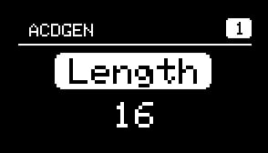
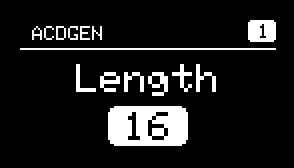
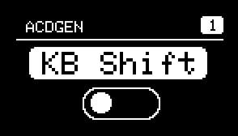
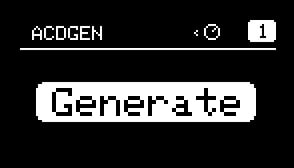
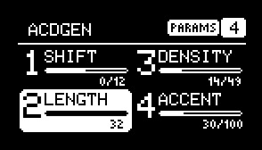
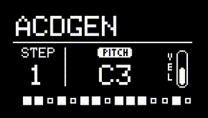
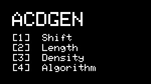
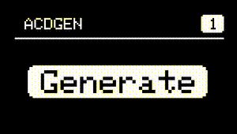
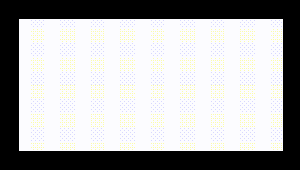

Menu Navigation
Main Menu
The NGEN menu system is designed to be easy to navigate using the MENU ENCODER and the RETURN button.
The unit boots into the Main Menu which lets you access all the different features available in NGEN. We've limited the maximum depth of the menu system to two levels (MAIN MENU > FEATURE SUB-MENU).
%%{init: {'flowchart' : {'curve' : 'linear'}}}%%
flowchart TD
A[MAIN MENU] --> B[GENERATOR];
A --> C[MIDI FX];
A --> D[TRACK];
A --> E[SCALE];
A --> F[PERFORM];
A --> G[TOOLS];
A --> H[CLOCK];
A --> I[PROJECT];
A --> J[SETTINGS];
subgraph GEN [ ]
direction LR
P[PARAM VIEW] <--> K[GENERATOR PARAMETERS]
end
B --> GEN
C --> L[MIDIFX PARAMETERS];
F --> M[MACRO];
M --> N[MACRO MAPPING];
G --> O[TOOL SETTINGS];
Use the MENU ENCODER to scroll through the list of features and click the MENU ENCODER to navigate to a sub-menu. To return to the previous menu, press the Return button.
Different sub-menus can contain different menu items such as parameters, toggle switches, and actions which can be selected by scrolling the menu MENU ENCODER.
- Parameters (indicated by the parameter name on top and value at the bottom) can be controlled by clicking the MENU ENCODER to access the parameter's value and scrolling the MENU ENCODER to change its value
Note
Most parameter values are adjusted in real-time as you turn the encode but some (such as the Generator and MIDI FX selection in the Track sub-menu) require you to click the encoder to confirm the new value.


Clicking the encoder on parameters switches between parameter selector and value
- Switches can be toggled by clicking the MENU ENCODER

- Actions (indicated by the action name displayed on the center of the screen) can be called by clicking the MENU ENCODER

Extra Parameter Symbols
Some menu items and parameters can display additional symbols on the bottom right corner such as:
- Beta - The Beta label is used to indicate features that are still in beta / under development
- Next - The Next label (represented by
>>) is used to indicate parameters that only affect the next pattern generation (non real-time)
Advanced Parameters and Settings
NGEN includes a variety of different features, settings and parameters that lets you use it in a variety of different ways but, to make it easier for you to get started, certain advanced parameters and settings are hidden by default.
To enable the advanced mode, go to Settings, enable Advanced and save your settings.
Display Modes
To better display the appropriate information, NGEN automatically switches between different modes (Menu Navigation, Idle, and Parameter Visualization).
Menu Navigation is the default mode of the display.
When moving one of the PARAM knobs, NGEN will display the name, current value, and range of the parameter currently mapped to that knob.
While in Generator or Clock sub-menus, the display will switch to the selected Idle mode (Animation or Parameter List) after 5 seconds of no hardware interaction unless Idle Mode is set to OFF.
Param View

The Param View provides an overview of the parameters currently mapped to the 4 Param knobs.
To enter this view, navigate to any sub-menu that displays the knob icon in its header (such as Generator, MIDI FX, Scale, or Clock) and scroll the MENU ENCODER counter-clockwise (left). To exit, either press the RETURN button or scroll the MENU ENCODER clockwise (right).
The Param View dedicates a quadrant of the display to each of the first four parameter mappings, showing the knob number, the parameter name, and its current value. To view the mappings for the additional four parameters, press and hold the FUNCTION button.
When a Param knob is adjusted in this view, its corresponding quadrant is highlighted for immediate visual feedback. Note that while the Param View is active, NGEN temporarily disables other displays, such as the standard Parameter view and any Idle Mode animations.
The Param View can be disabled via the PARAM VIEW toggle available in Settings / Display.
Idle Modes
Animations

NGEN includes unique animations for Generators and Clock Generators, designed to provide visual feedback of their current state/functionality.
While displaying an animation, parameters modified via the 4 PARAM knobs are displayed on the top section of the display to prevent obstructing the animation.
Parameter List

This idle mode displays a list of the parameters currently mapped to the 4 PARAM knobs and it's designed to help users get used to different mappings.
UI Visual Effects

By default, NGEN uses certain display visual effects such as glitch transitions (after boot sequence and before entering Idle Mode) and display inversions (when generating a new sequence using the GENERATE button).
These effects can be disabled via the UI Visual FXs setting available in Settings / Display.
Screensaver

In order to prevent display burn-in, NGEN's display will go into screensaver mode after a certain period (determined by the Screensaver Period setting) of no hardware interaction (unless it's displaying an animation). The screensaver does not affect other functions so NGEN will continue to work normally while in screensaver mode.To exit the screensaver mode, move any of the knobs or click on any of the buttons.